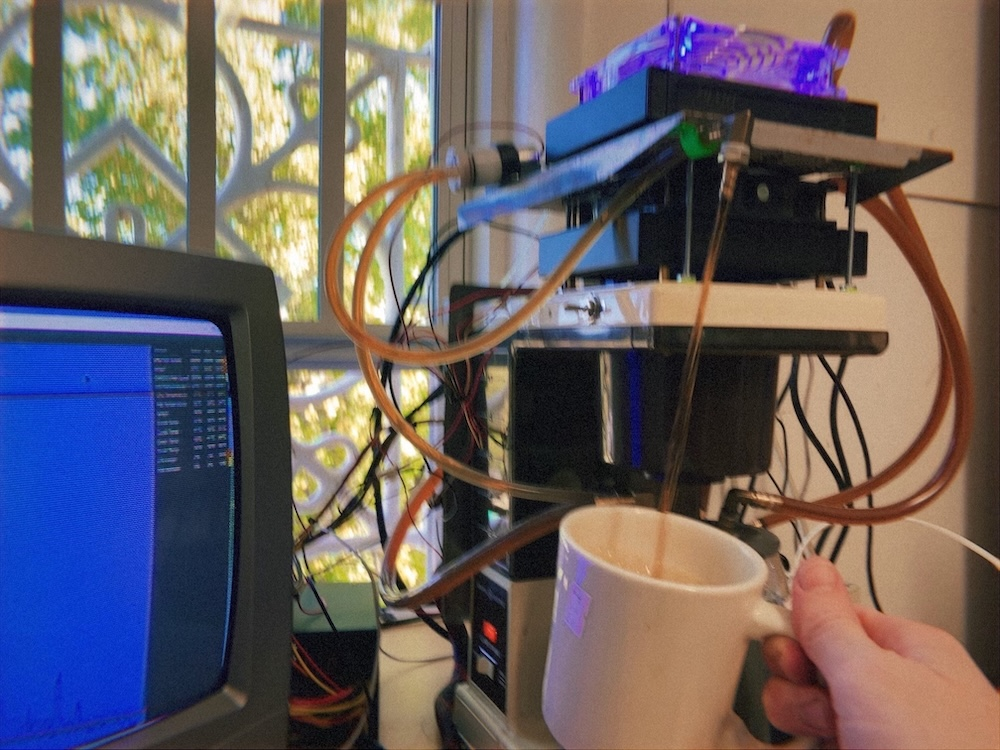
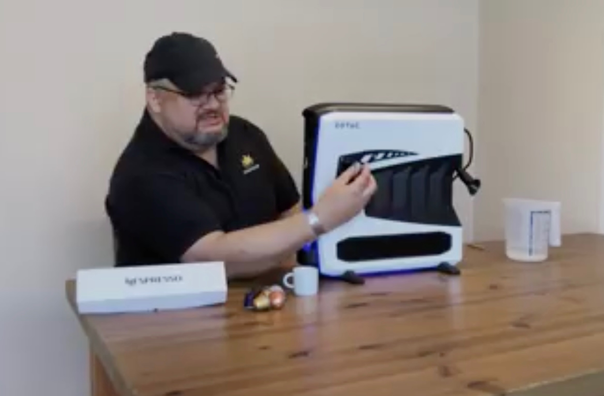
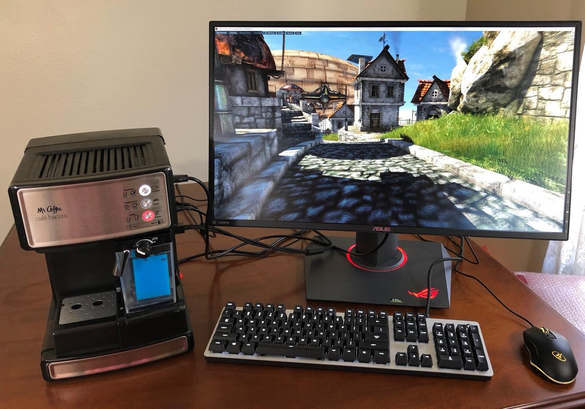
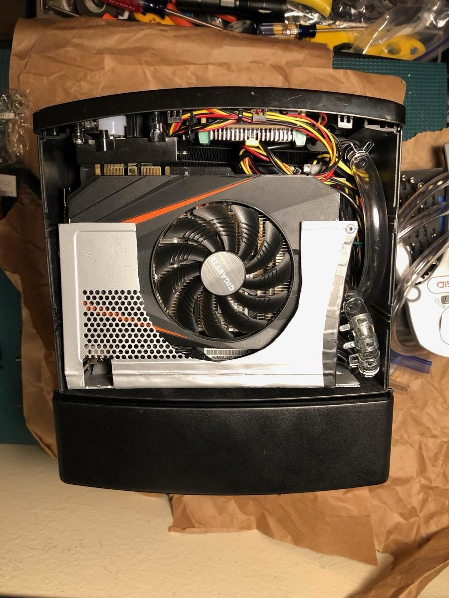
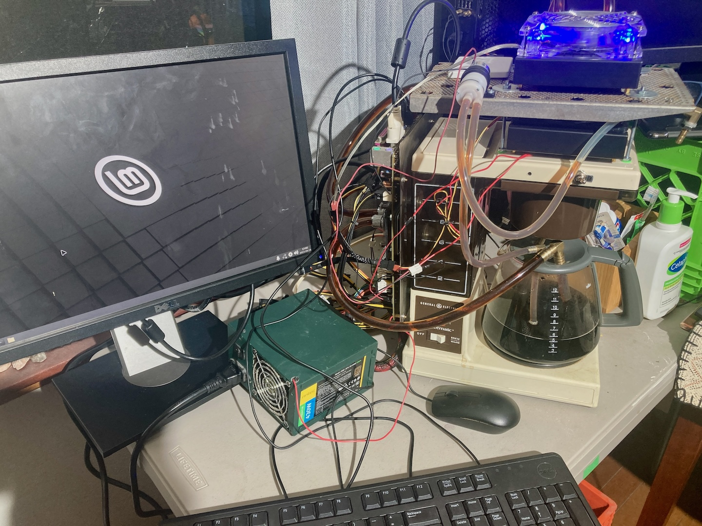
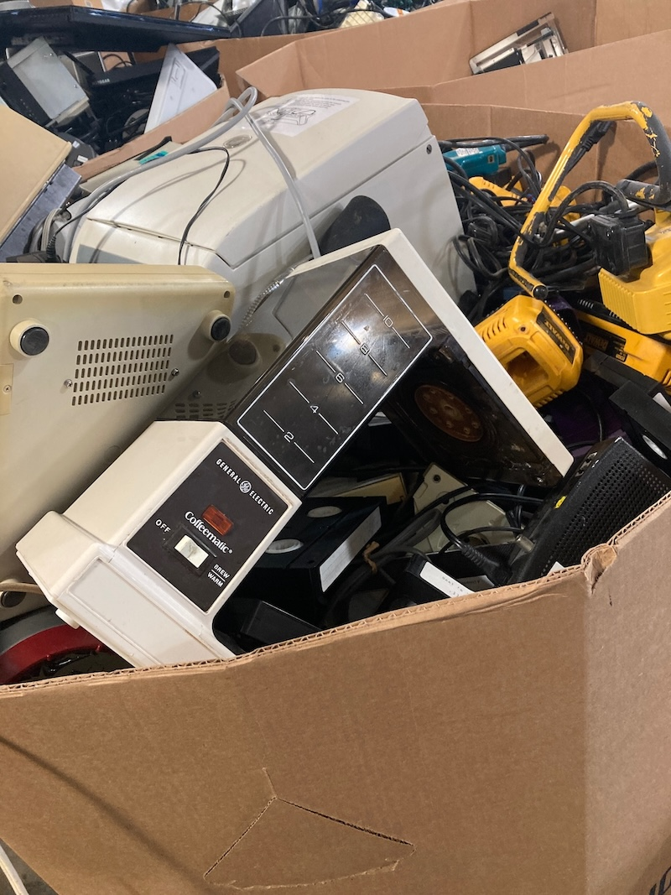
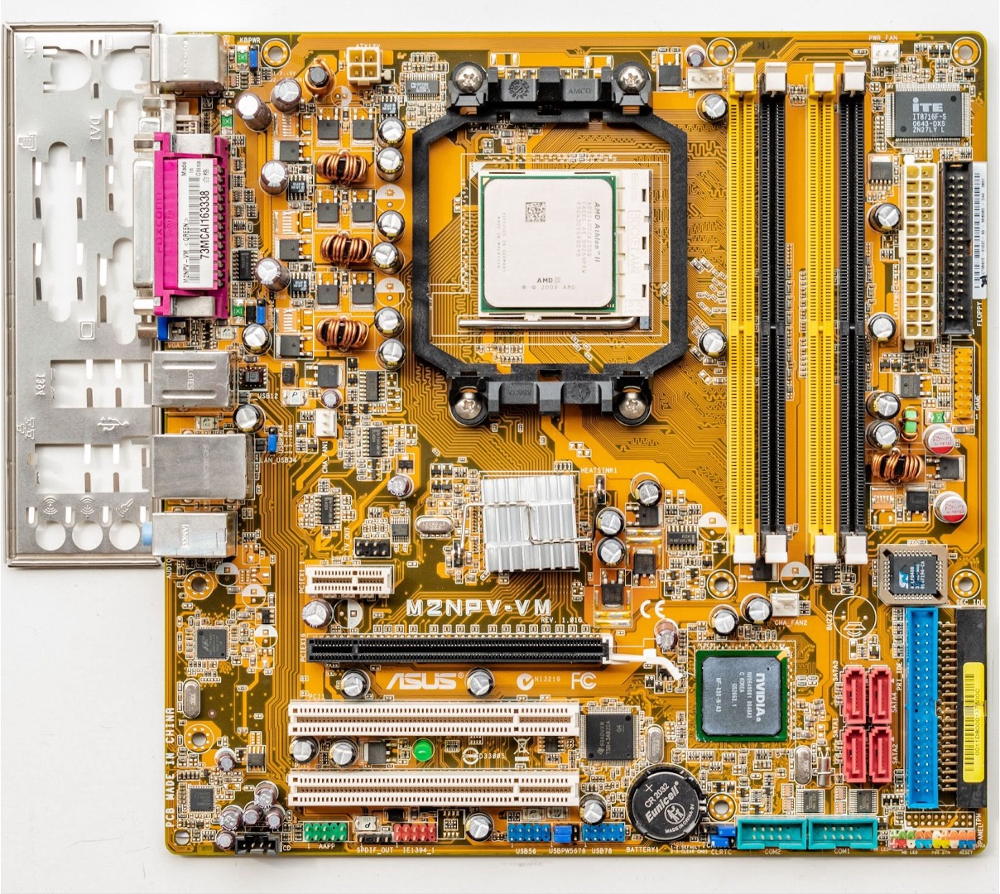
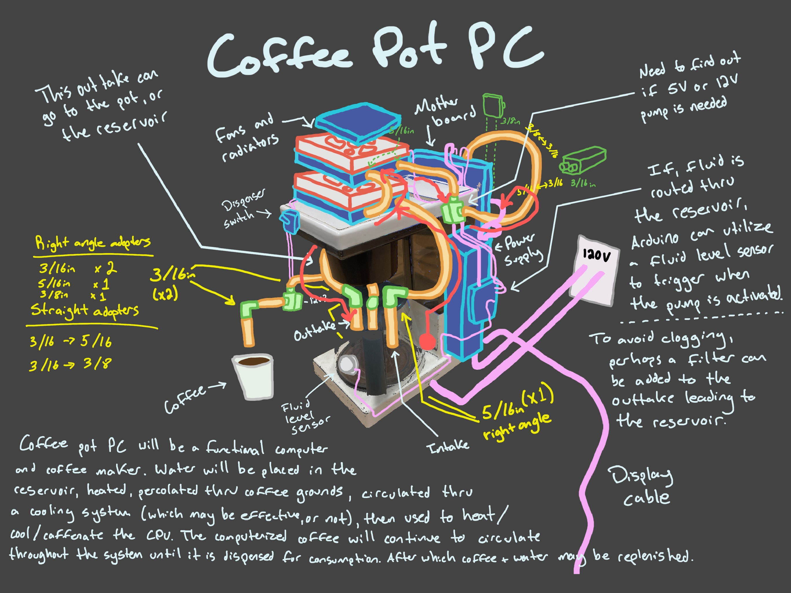
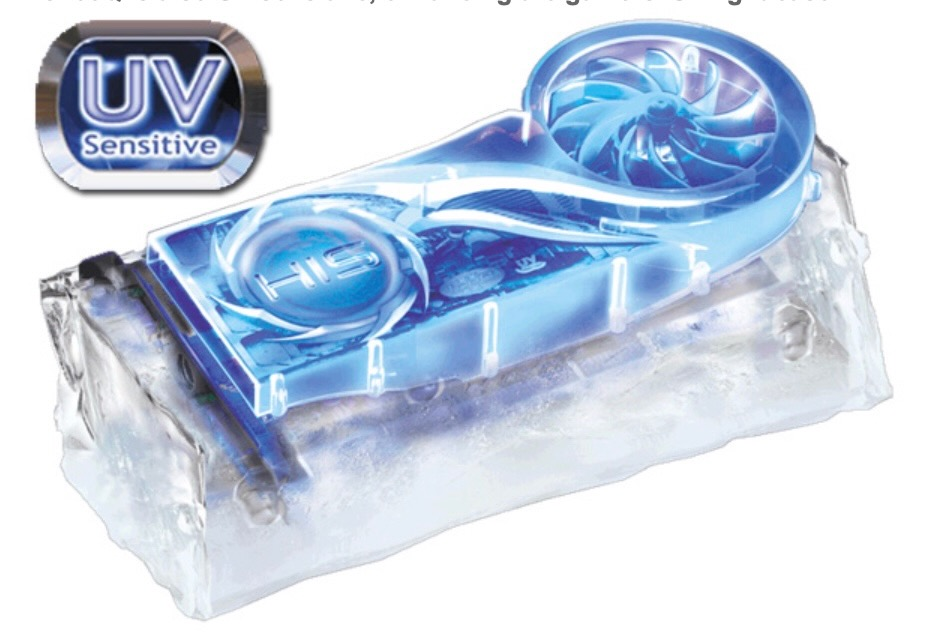

PERCOLATING HUMAN COMPUTER INTERACTION
Percolating HCI is an ongoing project featuring a coffee gadget
interfaced with DDR2 unbuffered DIMMS. The project focuses on a
custom built personal computer (PC) named Coffeematic PC. This PC,
which is self-destructive by design and harmonious in trials, examines
digital flows from perspectives of percolation and
design. The following is a catalog of how Coffeematic PC extends headroom
within operating environments while
percolating the processes encountered through its configuration. Synthesizing a gaming PC and coffee pot
is not an original idea.
There have been 5 users including myself who have imagined it. But, Coffeematic PC
is different, and it could not exist without the unsung, innovative nature of its predecessors.
Profound and poetically articulated. Elegant and assertive. Highly scaleable with dynamic acceleration.
No. These do not describe Coffeematic PC. Custom computer modification has a not-so-long history.
The machines discussed in this article span from 2001 to 2024. Custom PC modification can be traced to
1995 when video games like Doom and Quake emerged. Saavy and amateur experimenters upgraded
clunky PCs with graphics and sound cards and by 2001 they were using Dremels, blood, and cart wheels
(can you do one?) to pimp their rigs. Saavy hobbi-artists do the same today. The impulse
to create absurd computers has not changed that much over time. We are curious risk-takers seeking
innovation, not so different from a child who sticks a fork into an electrical outlet.
Some things stay the same, but tech and cultural conditions change. Don't say you
"Pimped your rig" in 2024.
What is Coffeematic PC and how does it work?
Coffeematic PC is a custom computer build. A gaming computer synthesized with a coffee maker.
This personal computer (PC) percolates Java like a regular coffee maker. Very hot Java.
Computers usually use fans or liquid cooling systems to reduce heat.
Coffeematic PC uses the hot Java it brews to heat? cool? caffeinate? the computer.

HOW COFFEEMATIC PC WORKS
Coffeematic PC percolates a pot of Java. A pump takes the hot, caffenated slurry (~90C/194F)
and circulates it thru two radiators sitting on top of Coffeematic PC's crown ->
down to a central processing unit (CPU) tucked within an ASUS M2NPV-VM
motherboard snugly strapped to Coffeematic PC's athletic back.
Java continues through an artery returning to Coffeematic PC's reproduced caraffe.
The process repeats until Java is integrated with end-user or the machine is powered off.

↑ Coffeematic PC has a dedicated pump to aggressively dispense Java for user.
CPU's are meant to be cool and Java hot. The graph below monitors Coffeematic PC for 75 minutes.
The machine is just barely non-destructive. Coffeematic PC's CPU, body,
and circulatory system eventually find equalibrium. A warm 33C/91F -
amazingly close to the temperature of the slurry that flows through you and me.

THE LINEAGE OF COFFEE MAKER COMPUTERS
I'm not the first person to synthesize a coffee maker and a computer.
But, I think I am the first to use hot Java as a cooling method.
2002 - The Caffeine Machine - Nick Pelis (LINK)
2018 - Zotac's Mek1 Nespresso (LINK)

2019 - Mr. Coffee PC - Logarythym (LINK)


2024 - I Built a PC that Makes Coffee - Nerdforge's Martina and Hansi (LINK)
2024 - Coffeematic PC - Doug MacDowell (LINK)

---------------------------------------------
Coffeematic PC is made of vintage components.
The body of the PC is made from a General Electric Coffeematic automatic drip coffee maker produced around the 1980's.
The coffee maker is recognizeable to many people. More on that later.

The motherboard is a beautifully squared ASUS M2NPV-VM produced in 2006.

Other components of the build can be seen in this drawing. Most but not all of the components in this drawing made it into the final build.

The graphics are powered by a cool HIS HD 4670 IceQ Graphics Card produced around 2010.
